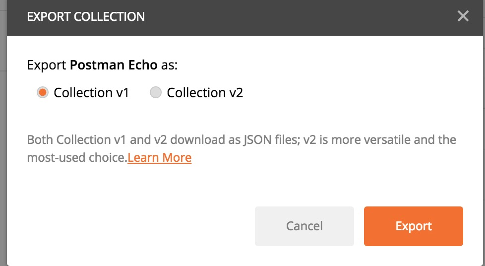
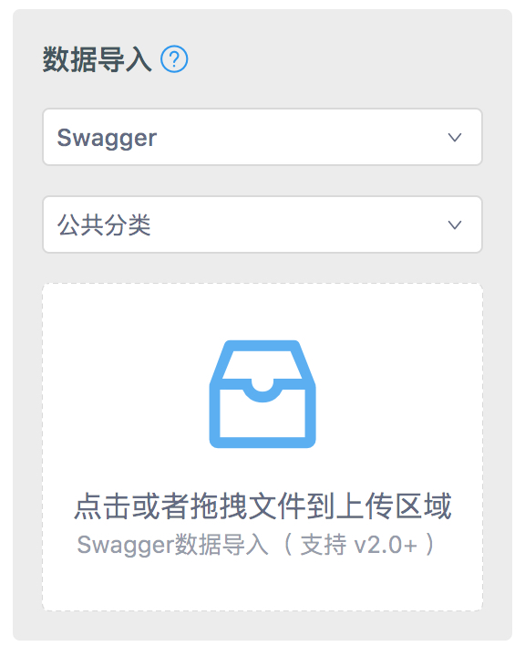

<html><head><meta charSet="UTF-8"/><meta content="text/html; charset=utf-8" http-equiv="Content-Type"/><meta http-equiv="X-UA-Compatible" content="IE=edge"/><meta name="viewport" content="width=device-width, initial-scale=1, maximum-scale=1"/><meta name="apple-mobile-web-app-capable" content="yes"/><meta name="apple-mobile-web-app-status-bar-style" content="black"/><link rel="apple-touch-icon" sizes="180x180" href="../ydoc/images/apple-touch-icon.png"/><link rel="icon" type="image/png" sizes="32x32" href="../ydoc/images/favicon-32x32.png"/><link rel="icon" type="image/png" sizes="16x16" href="../ydoc/images/favicon-16x16.png"/><link rel="manifest" href="../ydoc/images/manifest.json"/><link rel="mask-icon" href="../ydoc/images/safari-pinned-tab.svg&quot;" color="#5bbad5"/><meta name="theme-color" content="#ffffff"/><meta http-equiv="Cache-Control" content="no-transform"/><meta http-equiv="Cache-Control" content="no-siteapp"/><title>数据导入-教程</title><link rel="stylesheet" href="../ydoc/styles/style.css"/><meta name="author" content="ymfe"/><meta name="keywords" content="api管理,接口管理,接口文档,api文档"/><meta name="description" content="YApi 是高效、易用、功能强大的 api 管理平台，旨在为开发、产品、测试人员提供更优雅的接口管理服务。可以帮助开发者轻松创建、发布、维护 API，YApi 还为用户提供了优秀的交互体验，开发人员只需利用平台提供的接口数据写入工具以及简单的点击操作就可以实现接口的管理"/><meta id="releativePath" content=".."/><link rel="stylesheet" href="../ydoc/ydoc-plugin-search/search.css"/></head><body><div class="g-doc"><div class="m-summary" id="js-menu"><div class="m-summary-content" id="js-menu-content"><div class="m-summary-block"><div class="m-summary-title">快速上手</div><ul class="m-summary-list indent"><li class="item"><a href="index.html" class="href">认识YApi</a></li><li class="item"><a href="quickstart.html" class="href">创建第一个API</a></li></ul></div><div class="m-summary-block"><div class="m-summary-title">进阶篇</div><ul class="m-summary-list indent"><li class="item"><a href="manage.html" class="href">权限</a></li><li class="item"><a href="project.html" class="href">项目操作</a></li><li class="item"><a href="api.html" class="href">接口操作</a></li><li class="item"><a href="mock.html" class="href">数据Mock</a></li><li class="item"><a href="adv_mock.html" class="href">高级Mock</a></li><li class="item"><a href="case.html" class="href">自动化测试</a></li><li class="item"><a href="" class="href">数据导入</a></li></ul></div><div class="m-summary-block"><div class="m-summary-title">自定义</div><ul class="m-summary-list indent"><li class="item"><div class="m-summary-block"><a href="plugin-index.html" class="href">插件</a><ul class="m-summary-list indent"><li class="item"><a href="plugin-dev.html" class="href">插件开发</a></li><li class="item"><a href="plugin-list.html" class="href">插件列表</a></li><li class="item"><a href="plugin-hooks.html" class="href">钩子</a></li></ul></div></li><li class="item"><a href="redev.html" class="href">二次开发</a></li></ul></div><div class="m-summary-block"><ul class="m-summary-list"><li class="item"><a href="qa.html" class="href">常见问题解答</a></li><li class="item"><a href="https://github.com/YMFE/yapi/blob/master/CHANGELOG.md" class="href">版本记录</a></li></ul></div></div><div class="m-summary-switch" id="js-summary-switch"><svg viewBox="0 0 926.23699 573.74994" version="1.1" x="0px" y="0px" width="15" height="15" class="bottom"><g transform="translate(904.92214,-879.1482)"><path d=" m -673.67664,1221.6502 -231.2455,-231.24803 55.6165, -55.627 c 30.5891,-30.59485 56.1806,-55.627 56.8701,-55.627 0.6894, 0 79.8637,78.60862 175.9427,174.68583 l 174.6892,174.6858 174.6892, -174.6858 c 96.079,-96.07721 175.253196,-174.68583 175.942696, -174.68583 0.6895,0 26.281,25.03215 56.8701, 55.627 l 55.6165,55.627 -231.245496,231.24803 c -127.185,127.1864 -231.5279,231.248 -231.873,231.248 -0.3451,0 -104.688, -104.0616 -231.873,-231.248 z " fill="#fff"></path></g></svg><svg viewBox="0 0 926.23699 573.74994" version="1.1" x="0px" y="0px" width="15" height="15" class="top"><g id="Page-1" stroke="none" stroke-width="1" fill="none" fill-rule="evenodd"><g id="aaa" fill="#fff" fill-rule="nonzero"><path d="M231.2455,342.502 L0,111.25397 L55.6165,55.62697 C86.2056,25.03212 111.7971,-2.99999998e-05 112.4866,-2.99999998e-05 C113.176,-2.99999998e-05 192.3503,78.60859 288.4293,174.6858 L463.1185,349.3716 L637.8077,174.6858 C733.8867,78.60859 813.060896,-2.99999997e-05 813.750396,-2.99999997e-05 C814.439896,-2.99999997e-05 840.031396,25.03212 870.620496,55.62697 L926.236996,111.25397 L694.9915,342.502 C567.8065,469.6884 463.4636,573.75 463.1185,573.75 C462.7734,573.75 358.4305,469.6884 231.2455,342.502 Z" id="Shape" transform="translate(463.118498, 286.874985) scale(1, -1) translate(-463.118498, -286.874985) "></path></g></g></svg></div></div><div class="m-main" id="js-panel"><header class="m-header" id="js-header"><div class="m-header-title js-logo"><a href="../index.html" target="_self"><h6 class="name">YApi</h6></a></div><div><div class="m-search">
      <div class="icon">&#xf0fd;</div>
      <input type="text" class="input js-input" placeholder="搜索文档内容" />
      <div class="m-search-result js-search-result"></div>
    </div></div><nav class="m-header-nav js-nav"><ul class="m-header-items"><li class="item active"><a class="href" href="index.html">教程</a></li><li class="item "><a class="href" href="../devops/index.html">内网部署</a></li></ul></nav><div id="js-nav-btn" class="m-header-btn ui-font-ydoc"></div></header><div class="m-content"><div id="markdown-body" class="m-content-container markdown-body"><h1>&#x6570;&#x636E;&#x5BFC;&#x5165;</h1>
<p>&#x5728;&#x6570;&#x636E;&#x7BA1;&#x7406;&#x53EF;&#x5FEB;&#x901F;&#x5BFC;&#x5165;&#x5176;&#x4ED6;&#x683C;&#x5F0F;&#x7684;&#x63A5;&#x53E3;&#x6570;&#x636E;&#xFF0C;&#x65B9;&#x4FBF;&#x5FEB;&#x901F;&#x6DFB;&#x52A0;&#x63A5;&#x53E3;&#x3002;YApi &#x76EE;&#x524D;&#x652F;&#x6301; postman, swagger, har &#x6570;&#x636E;&#x5BFC;&#x5165;&#x3002;</p>
<h2 id="postman-&#x6570;&#x636E;&#x5BFC;&#x5165;">Postman &#x6570;&#x636E;&#x5BFC;&#x5165;</h2>
<p>1.&#x9996;&#x5148;&#x5728;postman&#x5BFC;&#x51FA;&#x63A5;&#x53E3;</p>
<div></div>
<p>2.&#x9009;&#x62E9;collection_v1,&#x70B9;&#x51FB;export&#x5BFC;&#x51FA;&#x63A5;&#x53E3;&#x5230;&#x6587;&#x4EF6;xxx</p>
<div></div>
<p>3.&#x6253;&#x5F00;yapi&#x5E73;&#x53F0;&#xFF0C;&#x8FDB;&#x5165;&#x5230;&#x9879;&#x76EE;&#x9875;&#x9762;&#xFF0C;&#x70B9;&#x51FB;&#x6570;&#x636E;&#x7BA1;&#x7406;&#xFF0C;&#x9009;&#x62E9;&#x76F8;&#x5E94;&#x7684;&#x5206;&#x7EC4;&#x548C;postman&#x5BFC;&#x5165;&#x65B9;&#x5F0F;&#xFF0C;&#x9009;&#x62E9;&#x521A;&#x624D;&#x4FDD;&#x5B58;&#x7684;&#x6587;&#x4EF6;&#x8DEF;&#x5F84;&#xFF0C;&#x5F00;&#x59CB;&#x5BFC;&#x5165;&#x6570;&#x636E;</p>
<div></div>
<h2 id="har-&#x6570;&#x636E;&#x5BFC;&#x5165;">HAR &#x6570;&#x636E;&#x5BFC;&#x5165;</h2>
<p>&#x53EF;&#x7528; chrome &#x5B9E;&#x73B0;&#x5F55;&#x5236;&#x63A5;&#x53E3;&#x6570;&#x636E;&#x7684;&#x529F;&#x80FD;&#xFF0C;&#x65B9;&#x4FBF;&#x5F00;&#x53D1;&#x8005;&#x5FEB;&#x901F;&#x5BFC;&#x5165;&#x9879;&#x76EE;&#x63A5;&#x53E3;</p>
<p>1.&#x6253;&#x5F00; Chrome &#x6D4F;&#x89C8;&#x5668;&#x5F00;&#x53D1;&#x8005;&#x5DE5;&#x5177;&#xFF0C;&#x70B9;&#x51FB;network&#xFF0C;&#x9996;&#x6B21;&#x4F7F;&#x7528;&#x8BF7;&#x5148;clear&#x6240;&#x6709;&#x8BF7;&#x6C42;&#x4FE1;&#x606F;&#xFF0C;&#x786E;&#x4FDD;&#x5F55;&#x5236;&#x529F;&#x80FD;&#x5F00;&#x542F;&#xFF08;&#x7EA2;&#x8272;&#x4E3A;&#x5F00;&#x542F;&#x72B6;&#x6001;&#xFF09;</p>
<div></div>
<p>2.&#x64CD;&#x4F5C;&#x9875;&#x9762;&#x5B9E;&#x9645;&#x529F;&#x80FD;&#xFF0C;&#x5B8C;&#x6210;&#x540E;&#x70B9;&#x51FB;save as HAR with content,&#x5C06;&#x6570;&#x636E;&#x4FDD;&#x5B58;&#x5230;&#x6587;&#x4EF6;xxx</p>
<div></div>
<p>3.&#x6253;&#x5F00;yapi&#x5E73;&#x53F0;&#xFF0C;&#x8FDB;&#x5165;&#x5230;&#x9879;&#x76EE;&#x9875;&#x9762;&#xFF0C;&#x70B9;&#x51FB;&#x6570;&#x636E;&#x7BA1;&#x7406;&#xFF0C;&#x9009;&#x62E9;&#x76F8;&#x5E94;&#x7684;&#x5206;&#x7EC4;&#x548C;har&#x5BFC;&#x5165;&#x65B9;&#x5F0F;&#xFF0C;&#x9009;&#x62E9;&#x521A;&#x624D;&#x4FDD;&#x5B58;&#x7684;&#x6587;&#x4EF6;&#x8DEF;&#x5F84;&#xFF0C;&#x5F00;&#x59CB;&#x5BFC;&#x5165;&#x6570;&#x636E;</p>
<div></div>
<h2 id="swagger-&#x6570;&#x636E;&#x5BFC;&#x5165;">Swagger &#x6570;&#x636E;&#x5BFC;&#x5165;</h2>
<p>&#x4EC0;&#x4E48;&#x662F; Swagger &#xFF1F;</p>
<div>[Swagger&#x4ECE;&#x5165;&#x95E8;&#x5230;&#x7CBE;&#x901A;](https://www.gitbook.com/book/huangwenchao/swagger/details)</div>
<br>
1.&#x751F;&#x6210; JSON &#x8BED;&#x8A00;&#x7F16;&#x5199;&#x7684; Swagger API &#x6587;&#x6863;&#x6587;&#x4EF6;<div>  &#x4F8B;&#x5982;&#x8FD9;&#x6837;&#x7684;&#x6570;&#x636E; &#xFF08;<a href="http://petstore.swagger.io/v2/swagger.json" target="blank">http://petstore.swagger.io/v2/swagger.json</a>&#xFF09;&#xFF0C;&#x53EF;&#x4EE5;&#x5C06;&#x5176;&#x5185;&#x5BB9;&#x590D;&#x5236;&#x5230; JSON &#x6587;&#x4EF6;&#x4E2D;&#x3002;</div>
<p>2.&#x6253;&#x5F00;yapi&#x5E73;&#x53F0;&#xFF0C;&#x8FDB;&#x5165;&#x5230;&#x9879;&#x76EE;&#x9875;&#x9762;&#xFF0C;&#x70B9;&#x51FB;&#x6570;&#x636E;&#x7BA1;&#x7406;&#xFF0C;&#x9009;&#x62E9;&#x76F8;&#x5E94;&#x7684;&#x5206;&#x7EC4;&#x548C;swagger&#x5BFC;&#x5165;&#x65B9;&#x5F0F;&#xFF0C;&#x9009;&#x62E9;&#x521A;&#x624D;&#x7684;&#x6587;&#x4EF6;&#xFF0C;&#x5F00;&#x59CB;&#x5BFC;&#x5165;&#x6570;&#x636E;</p>
<div></div>
<div></div>
<div></div></div><div class="m-content-container m-paging"><div class="m-paging-prev m-paging-item"><a href="case.html" class="href"><span class="ui-font-ydoc"></span>自动化测试</a></div><div class="m-paging-next m-paging-item"><a href="plugin-index.html" class="href">插件<span class="ui-font-ydoc"></span></a></div></div></div></div></div><script src="../ydoc/scripts/plugins/dollar.min.js"></script><script src="../ydoc/scripts/plugins/responsive-nav.min.js"></script><script src="../ydoc/scripts/plugins/slideout.min.js"></script><script src="../ydoc/scripts/app.js"></script><script src="../ydoc/ydoc-plugin-search/core.js"></script><script src="../ydoc/ydoc-plugin-search/search.js"></script><script src="../search_json.js"></script></body></html>